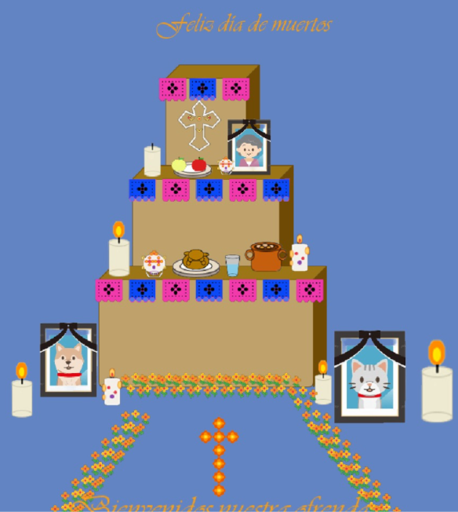

Con este proyecto aprendimos a utilizar Processing 4 para crear una ofrenda de Día de Muertos, agregando imágenes, animaciones e interacciones. Durante el proceso tuvimos algunas dificultades con el código y con la posición de los elementos, pero poco a poco fuimos encontrando la manera de solucionarlas y lograr que la ofrenda quedara como yo queriamos. También aprendimos a hacer que algunos elementos reaccionaran al hacer clic, como la vela, el mensaje de bienvenida y el camino de flores. Esto nos ayudó a comprender mejor cómo funciona la programación y cómo podemos utilizarla para darle movimiento e interacción a nuestros diseños. En general, nos agradó realizar este proyecto porque pudimos combinar la creatividad con lo que hemos aprendido en clase, además de representar una tradición mexicana de una manera diferente.

← Volver